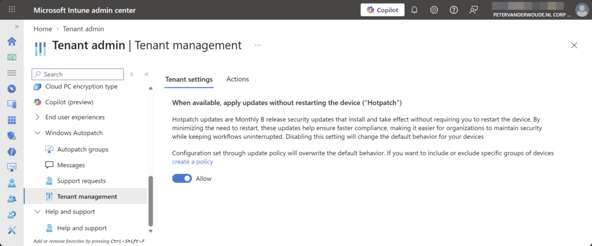
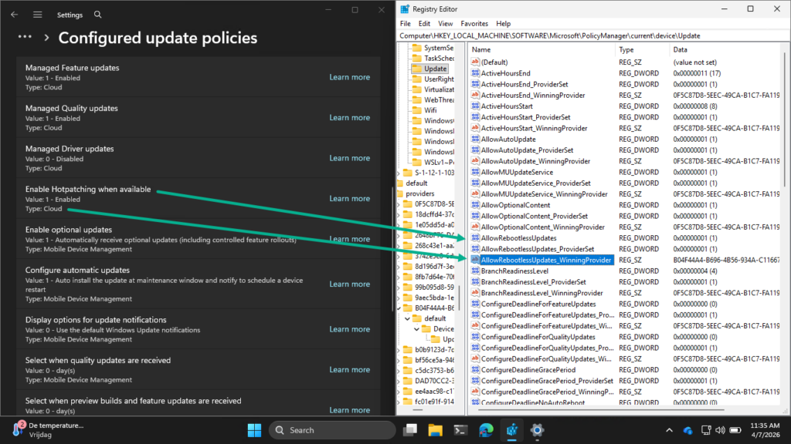

This week is all about the recently introduced configuration that will enable Windows hotpatch security updates by default. The configuration to enable the usage of hotpatch security updates has been available since the introduction of Windows 11 version 24H2, and can be configured relatively as shown in this post. Starting with the Windows security update of May 2026, Windows Autopatch will enable hotpatch security updates by default. That should help organizations with easier getting more secure. The configuration is achieved via a tenant-wide configuration via Windows Autopatch that is only applied when no quality update policies are applied to the device. That configuration is available in Microsoft Intune and will be enabled by default. This post will provide a closer look at that new tenant-wide configuration, the alternatives, and the actual applied configuration on the device.
Note: This change applies whether using Windows Autopatch or the Windows updates API.
Reviewing tenant configuration for applying updates without restarting
When looking at the new tenant-wide configuration to enable hotpatch security updates, the actual configuration is pretty straightforward. The configuration is available in Microsoft Intune by navigating to Tenant admin > Windows Autopatch > Tenant Management > Tenant settings. On the Tenant admin | Tenant management page, the configuration When available, apply updates without restarting the device (“Hotpatch”) is switched to Allow by default to automatically enable hotpatch security updates for all devices that are registered with Windows Autopatch. That information is shown in Figure 1.
{kind=link}

This configuration does not mean that hotpatch security updates will be mandatory for every organization and every user. First, this slider can be turned of again, and second, this configuration will only be applied when no other quality update policies that configure hotpatch security updates are applied to the device. That combination enables organization to still introduce hotpatch security updates at their own pace. Their own quality update policy will take precedence.
Important: Hotpatch security update configuration in quality update policies take precedence over tenant settings.
Experiencing tenant configuration on the device
When the tenant-wide configuration is in place, it is time to verify the configuration. There are many methods to verify that hotpatch security updates are enabled and functional. Most of those methods do, however, not really provide insights in where the information is coming from. The reporting, for example, is great, but only provide insights in the updates that devices are installing and not in the the configuration on the devices. Locally on the device there are multiple places available that show the successful configuration of enabling hotpatch security updates. The best and easiest places to look at, are the registry on the device and the Settings app. Both provide a clear indication of the newly applied configuration. Besides that, both locations also provide information about were the configurations are coming from. Below in Figure 2 is an overview of the applied configuration in the Settings app (via Windows Update > Advanced Options > Configured update policies) and the registry. The first location shows that the configuration is coming from the Cloud and the other shows a different winning provider.
{kind=link}

More information
For more information regarding the Windows hotpatch configuration options, refer to the following docs.
Discover more from All about Microsoft Intune
Subscribe to get the latest posts sent to your email.